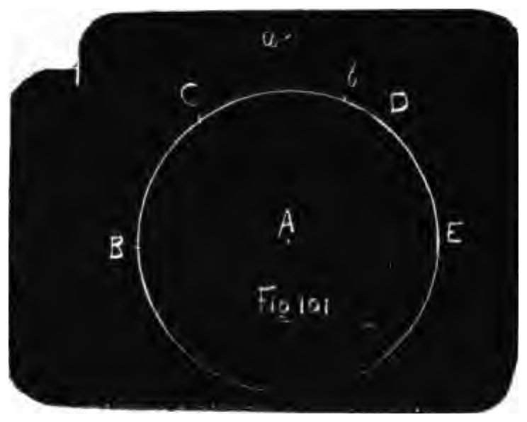
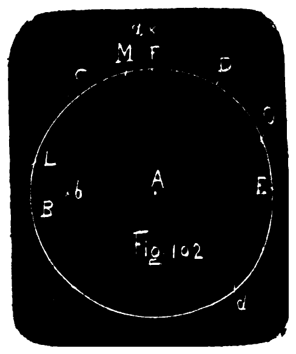
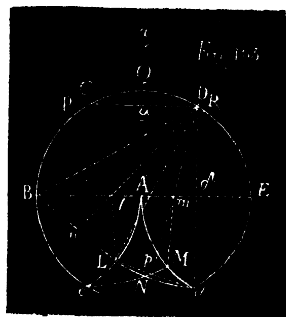
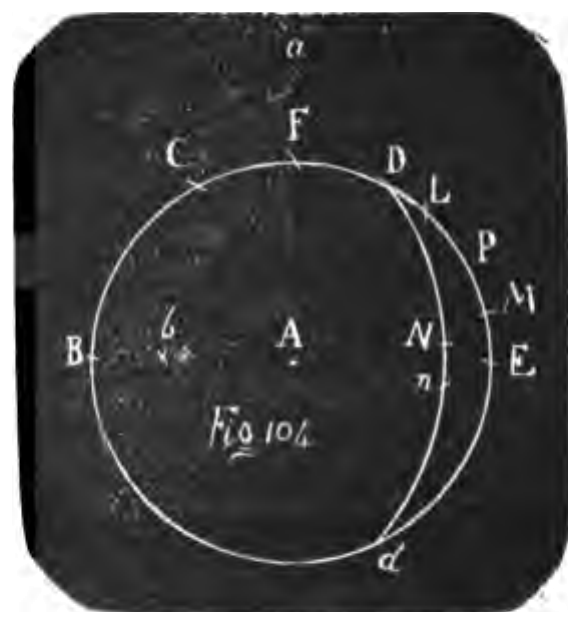

§§ 267–272: Rettificazione del quadrante, arco radiante e quadratura del cerchio (Fig. 101–104)¶
267. Prob. In un cerchio (fig. 101) di dato raggio \(AB\) trovare una corda \(Bb\) eguale prossimamente ad un quarto della circonferenza.
Sol. Si faccia nella circonferenza ad \(AB = BC = CD = DE\). Quindi a \(BD = Ba = Ea\). Col centro \(C\), e col raggio \(Ca\) si segni un arco, che tagli la circonferenza in \(b\). Sarà la \(Bb\) la corda cercata.
Dim. Supposto \(AB = 1\), si ponga \(BC = A = 60^\circ\) nell’equazione (1); risulterà \(A' = 43^\circ 33' \frac{286}{2005} = Cb\). Sarà dunque l’arco \(BCb = 103^\circ 33' \frac{286}{2005}\). La sua metà \(51^\circ 46' \frac{1145}{1005}\) ha per seno \(0{,}7855998\). Sarà dunque la corda \(Bb = 1{,}5711996\). Il quarto della circonferenza è poi \(= 1{,}5707963\). L’errore dunque è di \(0{,}0004\) circa.


268. Secondo la proporzione di Archimede posto il raggio \(= 1\); si trova il quarto della circonferenza \(= \frac{11}{7} = 1{,}5714\). Dunque la costruzione di questo Problema (§ 267) dà un’approssimazione maggiore. Essendo questa costruzione semplicissima, sarà da usarsi in pratica a preferenza di altre, che potremmo aggiungere, che darebbero bensì una maggiore approssimazione teorica, ma sarebbero più complicate, e però più soggette ad errore.
269. Prob. In un cerchio (fig. 102) di dato raggio \(AB\) trovare l’arco eguale prossimamente allo stesso raggio.
Sol. Si faccia nella circonferenza \(BLCMFDOEd\) ad \(AB = BC\)
f. 0169 · p. 144\(= CD = DE = Ed\). Quindi a \(BD = Ba = Ea\). Quindi ad \(Aa = BF = Db = db = aL\). Quindi ad \(AB = FO\). Quindi finalmente a \(bF = OM\). Sarà l’arco \(LM\) eguale prossimamente al raggio.
Dim. Se nell’equazione (4) s’introduce \(A' = 90^\circ\), del quale arco è corda la \(aL\); risulterà \(BL = A = 20^\circ 42' \frac{786}{1721}\). Essendo poi \(OM = bF\) corda della quinta parte della circonferenza (§ 40), cioè di \(72^\circ\), ed essendo l’arco \(FO = 60^\circ\); sarà l’arco \(FM = 12^\circ\). Quindi l’arco \(LM = BF - BL - FM = 57^\circ 17' \frac{1035}{2721} = 57^\circ 17' 43''+\). Si ha poi l’arco eguale al raggio, come è noto \(= 57^\circ 17' 44''\). Dunque ecc.


270. Prob. Trovare (fig. 103) il lato di un quadrato, che prossimamente sia eguale in area ad un cerchio di raggio dato \(AB\).
Sol. Si faccia nella circonferenza \(BPCQDRE\) ad \(AB = BC = CD = DE\), e collo stesso raggio \(BA\), e coi centri \(B\) ed \(E\) si descrivano i due archi \(ALc\), \(AMd\). Coi centri \(C\) e \(D\), e col raggio \(DB\) si descrivano gli archi \(cNM\), \(dNL\). Si faccia ad \(AN = BP = PQ\); quindi ad \(LM = QR\). Sarà \(BR\) il lato cercato.


Dim. Se nel triangolo isoscele \(CND\) si suppone la base \(CD = 1\) divisa per metà in \(\mu\); si avrà \((CN)^2 = (C\mu)^2 + (N\mu)^2\), cioè (§ 2) \(3 = \frac{1}{4} + (N\mu)^2\); quindi \(N\mu = \frac{1}{2}\sqrt{11}\). Si ha poi \((CA)^2 = (C\mu)^2 + (A\mu)^2\), e quindi \(A\mu = \frac{1}{2}\sqrt{3}\). Sarà dunque \(AN = \frac{1}{2}(\sqrt{11} - \sqrt{3}) = 0{,}7922869\), che si trova essere corda di un arco \(= 46^\circ 40' \frac{1272}{2071}\)
f. 0170 · p. 145\(= BP = PQ\). Sarà dunque l’arco \(BQ = 93^\circ 20' \frac{2544}{2671}\). Siano condotte le rette \(BL\) divisa per metà in \(n\), \(BD\), \(Dn\), \(BE\), e le \(D\delta\), \(Ll\), \(Mm\) perpendicolari alla stessa \(BE\) in \(\delta\), \(l\) ed \(m\).
Essendo l’angolo \(DBE = 30^\circ\) (20, lib. III); sarà \(\operatorname{sen} DBE = \frac{1}{2}\); \(\cos DBE = \frac{1}{2}\sqrt{3}\). Sarà poi per la Trigonometria \(\cos DBn = \frac{Bn}{DB}\); \(\operatorname{sen} DBn = \frac{Dn}{DB}\); cioè \(\cos DBn = \frac{1}{6}\sqrt{3}\); e per essere \(Dn = \sqrt{(DB)^2 - (Bn)^2} = \frac{1}{2}\sqrt{11}\), \(\operatorname{sen} DBn = \frac{1}{6}\sqrt{33}\). Si ha poi (§ 154) \(\cos LBl = \cos(DBn - DBE) = \cos DBn \cdot \cos DBE + \operatorname{sen} DBn \cdot \operatorname{sen} DBE = \frac{1}{6}\sqrt{3} \times \frac{1}{2}\sqrt{3} + \frac{1}{6}\sqrt{33} \times \frac{1}{2} = \frac{1}{12}(3 + \sqrt{33}) = \frac{Bl}{BL} = Bl\) (per essere \(BL = BA = 1\)). Dunque \(Al = AB - Bl = \frac{1}{12}(9 - \sqrt{33})\), e quindi \(lm = LM = 2Al = \frac{1}{6}(9 - \sqrt{33}) = 0{,}5425729\), che si trova essere corda dell’arco \(= 31^\circ 28' \frac{2518}{2799} = QR\). Sarà dunque l’arco \(BQR = 124^\circ 49' \frac{6370}{7476}\). La sua metà \(62^\circ 24' \frac{6923}{7476}\) ha per seno \(0{,}8863283\), e però la corda di \(BQR\) sarà \(= 1{,}7726566\). Ora posto il raggio \(= 1\); si ha l’area del cerchio \(= 3{,}1415926\), che ha per logaritmo \(0{,}4971499\). La metà di questo logaritmo cioè \(0{,}2485749 = \log \sqrt{3{,}1415926}\) si trova essere \(\log 1{,}772453\). Si ha dunque l’errore di \(0{,}0002\) circa, il che dà un’approssimazione sufficiente.
271. Invece della \(AN\) si avrebbe potuto adoperare la \(dL\) o la \(cM\), che si devono trovare eguali alla stessa \(AN\).
Dim. Se si guidi la \(dL\) e la \(Dp\) alla sua metà in \(p\); sarà \(\operatorname{sen} LDp = \frac{Lp}{DL}\). Ma l’angolo \(LDp = \frac{1}{2} LDd = \frac{1}{2}(BDd - BDL) = 30^\circ - BDn\). Dunque (§ 155) \(\operatorname{sen} LDp = \frac{1}{2}\cos BDn - \frac{1}{2}\sqrt{3} \times \operatorname{sen} BDn = \frac{1}{2} \cdot \frac{1}{6}\sqrt{33} - \frac{1}{2}\sqrt{3} \times \frac{1}{6}\sqrt{3}\). Quindi \(Lp = DL \cdot \operatorname{sen} LDp = \frac{1}{4}\sqrt{11} - \frac{1}{4}\sqrt{3}\) ed \(Ld = \frac{1}{2}\sqrt{11} - \frac{1}{2}\sqrt{3} = AN\).


272. Prob. Dato (fig. 104) il lato \(AB\) d’un quadrato, trovare il raggio di un cerchio, che gli sia prossimamente eguale in area.
Sol. Col raggio \(AB\), centro \(A\) si descriva la circonferenza \(BCFDLPMEd\). Si faccia ad \(AB = BC = CD = Ed\). Col centro \(B\), e col raggio \(BD\) si descriva l’arco \(dnNDa\). Collo stesso raggio, e col centro \(E\) si tagli quest’arco in \(a\). Si faccia ad \(Aa = BF = Db = db\). Quindi ad \(AB = Dn = dN\). Col centro \(C\), e col raggio \(CN\) si tagli la circonferenza in \(P\). Si faccia ad \(Nn = PM\); quindi ad \(Fb = CL\). Sarà \(LM\) il lato cercato.
Dim. Se si supponga \(AB = 1\), avendo il triangolo \(BNd\) i lati rispettivamente eguali ai lati del triangolo \(BDL\) della fig. 103, si avrà \(\operatorname{sen} \frac{1}{2} dBN = \frac{1}{6}\sqrt{3}\); \(\cos \frac{1}{2} dBN = \frac{1}{6}\sqrt{33}\) (§ 271). Quindi \(\operatorname{sen} dBN = 2\operatorname{sen} \frac{1}{2} dBN \cdot \cos \frac{1}{2} dBN\) (§ 155) \(= \frac{1}{6}\sqrt{11}\); \(\cos dBN = \sqrt{1 - \operatorname{sen}^2 dBN} = \frac{5}{6}\). Essendo poi \(CBd\) angolo retto (31, lib. III), sarà \(\cos CBN = \operatorname{sen} dBN = \frac{1}{6}\sqrt{11}\). Ma si ha dalla Trigonometria \((CN)^2 = (BC)^2 + (BN)^2 - 2BC \cdot BN \cdot \cos CBN\). Dunque \(CN = \sqrt{4 - 2\sqrt{3} \cdot \frac{1}{6}\sqrt{11}} = \sqrt{4 - \frac{1}{3}\sqrt{33}} = 1{,}4440025\), che si trova essere corda di \(92^\circ 26' \frac{804}{2013} = CP\). Essendo poi \(\operatorname{sen} NBE = \frac{\frac{1}{2} Nd}{BN} = \operatorname{sen}(CBE - CBN) =\) (§ 155) \(\operatorname{sen} 60^\circ \cos CBN - \cos 60^\circ \cdot \operatorname{sen} CBN = \frac{1}{2}\sqrt{3} \times \frac{1}{6}\sqrt{11} - \frac{1}{2} \cdot \frac{5}{6}\); sarà \(Nn = 2BN \times \operatorname{sen} NBE = \frac{1}{6}(\sqrt{11} - 5\sqrt{3}) = 0{,}2149367\), che si trova essere corda di \(12^\circ 20' \frac{946}{2892} = PM\).
Sarà dunque l’arco \(CPM = 104^\circ 46' \frac{4220}{5821}\), dal quale sottratto l’arco \(CL\), che è una quinta parte della circonferenza (§ 40) \(= 72^\circ\), resterà l’arco \(LM = 32^\circ 46' \frac{4220}{5821}\), la corda del quale si trova \(= 0{,}5643274\). Ora posto \(\pi\) il rapporto della circonferenza al diametro, ed \(R\) il raggio di un cerchio, si ha la sua area \(= \pi R^2\), come è noto. Fatto dunque \(\pi R^2 = 1\), che è l’area del quadrato di raggio \(AB = 1\), al quale si vuole eguale il cerchio, si avrà \(R = \sqrt{\frac{1}{\pi}}\), e \(\log R = -\frac{1}{2}\log \pi = -0{,}2485749 = -1 + 0{,}7514251 = \log 0{,}5641896\). Non si commetterà dunque l’errore di \(0{,}0002\).